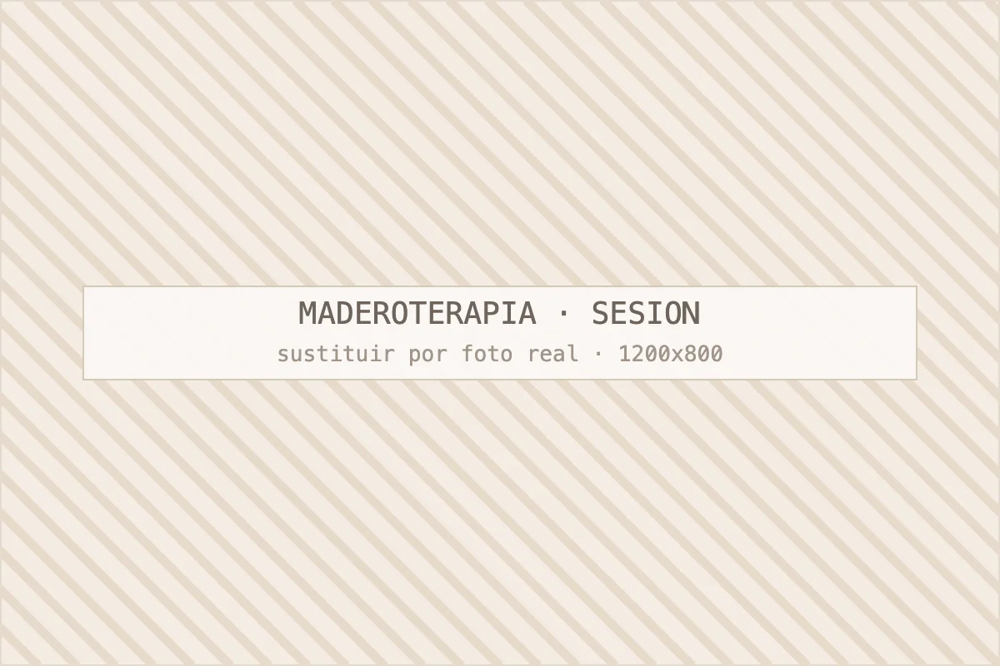
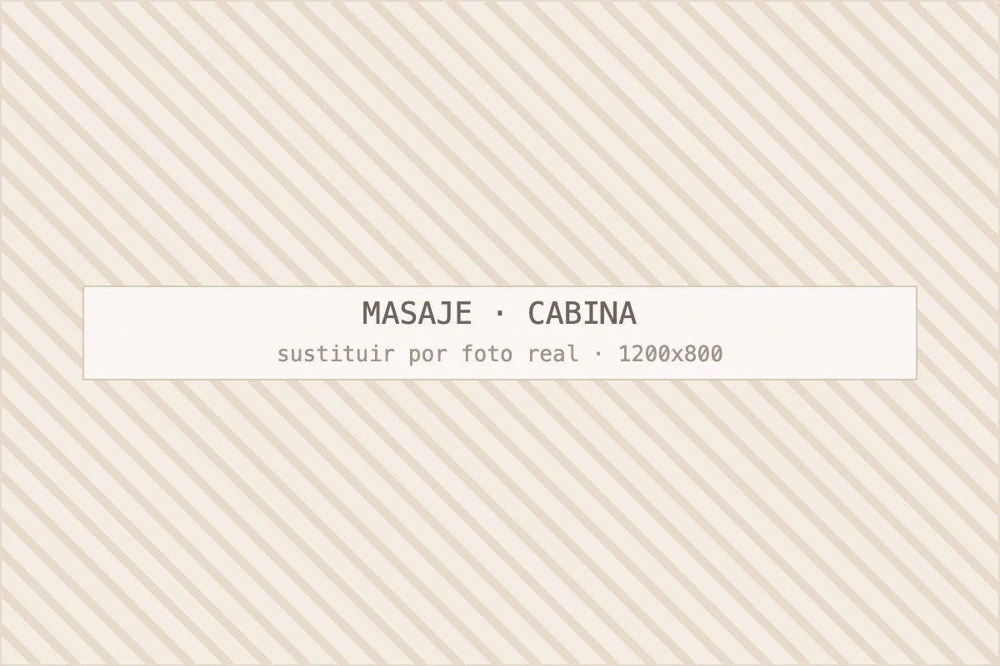

Maderoterapia corporal
Masaje profundo con instrumentos de madera para grasa localizada, retención y celulitis. Ciclos de 10–12 sesiones con medición de contorno.
Ver maderoterapia corporal · desde 35 €/sesiónCatálogo de tratamientos
Cinco familias de tratamiento y una regla común: antes de contratar nada, valoración gratuita con plan escrito, número de sesiones y precio. En Centro Estética Barcelona trabajamos en el Eixample desde hace más de diez años.

Masaje profundo con instrumentos de madera para grasa localizada, retención y celulitis. Ciclos de 10–12 sesiones con medición de contorno.
Ver maderoterapia corporal · desde 35 €/sesión
Protocolos reductores y reafirmantes que combinan maderoterapia, presoterapia, drenaje y radiofrecuencia según tu tejido.
Ver tratamientos corporales · 40–75 €/sesión
Limpieza profunda, hidratación, luminosidad y firmeza. Con diagnóstico de piel previo y pauta para casa.
Ver tratamientos faciales · 45–90 €/sesión
Pelo a pelo, sombreado o combinada. Diseño aprobado antes de implantar y retoque incluido en el precio.
Ver micropigmentación de cejas · 220–320 €
Relajante, descontracturante, circulatorio y drenaje linfático manual. Sesiones de 30, 60 y 90 minutos.
Ver masajes y drenaje · 35–70 €Por objetivo y por tejido, en ese orden. Primero definimos qué quieres conseguir —bajar contorno, mejorar la textura de la piel, aliviar tensión, enmarcar la mirada— y después miramos con qué material partimos.
Nos llega mucha gente pidiendo una técnica concreta porque la ha visto en redes. A veces encaja y a veces no: quien pide radiofrecuencia para la celulitis suele necesitar antes trabajo manual, y quien pide maderoterapia para la flacidez va a quedarse a medias. Preferimos discutirlo en la valoración antes de cobrar nada.
El corporal se mide en centímetros y necesita ciclos intensivos; el facial se juzga en textura, luminosidad y confort de la piel y se sostiene con mantenimiento.
| Criterio | Corporal | Facial |
|---|---|---|
| Cómo se mide | Centímetros y aspecto del tejido | Textura, poro, luminosidad |
| Ritmo | 2 sesiones/semana al inicio | 1 sesión cada 2–8 semanas |
| Ciclo | 10–12 sesiones | 4–6 sesiones por objetivo |
| Precio orientativo | 35–75 €/sesión | 45–90 €/sesión |
| Trabajo en casa | Agua, sal y movimiento | Rutina y protección solar |
Sesión suelta si vienes a probar o buscas bienestar puntual; bono si tienes un objetivo de contorno o de piel, porque el resultado depende de la repetición. Los bonos de 5 y 10 sesiones bajan el precio entre un 15 % y un 25 %.
Una advertencia honesta: no compres un bono de diez sesiones si sabes que no vas a poder venir dos veces por semana el primer mes. Es mejor empezar con cinco, ver cómo responde tu tejido y ampliar. Las condiciones están en la página de tarifas y bonos.
Preguntas frecuentes
Cuatro preguntas que resolvemos casi a diario por WhatsApp.
Empieza por la valoración gratuita: en veinte minutos vemos el tejido o la piel y te decimos qué técnica tiene sentido y cuántas sesiones harían falta. La mayoría de personas que llegan sin saber qué pedir acaban en un protocolo corporal combinado o en una limpieza facial profunda. No cobramos la consulta y no hace falta contratar nada ese día.
Sí, es lo que hacen muchas clientas: corporal en ciclo intensivo y facial de mantenimiento una vez al mes. Si contratas los dos, ajustamos el precio del facial. Lo que no hacemos es meter dos técnicas agresivas sobre la misma zona el mismo día.
La maderoterapia corporal, con diferencia, seguida de la micropigmentación de cejas. En corporal la petición número uno es abdomen y flancos; en facial, la limpieza profunda con extracción. Los masajes suben mucho en verano y en época de exámenes o cierres de trimestre.
Sí. Atendemos a hombres en masaje descontracturante, limpieza facial, tratamientos reductores y micropigmentación de cejas, y el protocolo se adapta al tipo de piel y al vello. No tenemos horarios ni cabinas diferenciadas: es el mismo centro y el mismo trato.
Pedir cita
Cuéntanos qué te preocupa y te decimos con franqueza qué tratamiento tiene sentido en tu caso, cuántas sesiones necesitarías y cuánto costaría. Si creemos que no vas a notar resultados, te lo diremos.
Última actualización: · Contenido revisado por Jeisy, responsable de Centro Estética Barcelona.